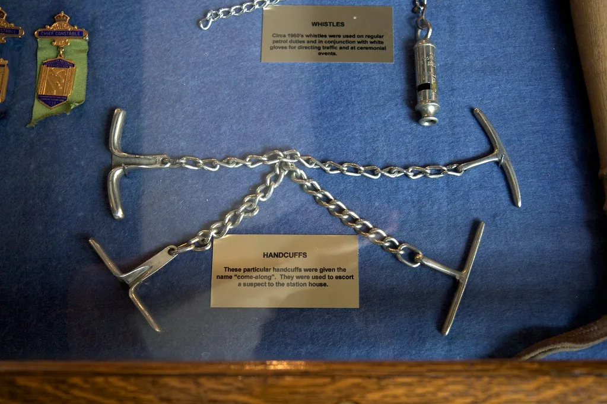
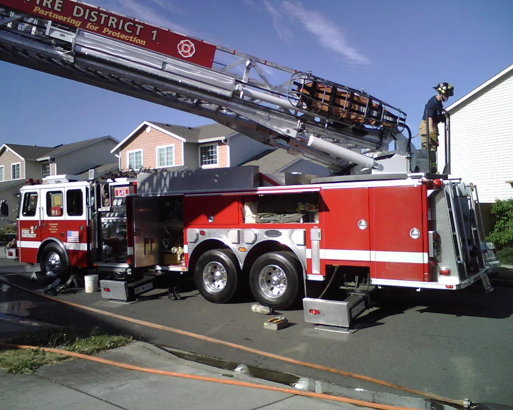

서울경찰청은 3일 서울 강남구 역삼동 특허법인 건물 두 곳에 불을 질러 26명을 다치게 한 혐의를 받는 77세 이명수의 이름과 나이, 얼굴을 공개했다. 신상정보는 이날부터 다음 달 3일까지 30일간 경찰 홈페이지 등을 통해 공개된다. 중대범죄를 저지른 피의자의 신상을 공개하는 제도가 적용된 사례로, 경찰은 범행의 잔혹성과 재범 위험성, 공공의 알 권리 등을 고려해 공개를 결정했다고 밝혔다.
사건은 지난달 20일 오전에 벌어졌다. 이씨는 오전 11시 54분쯔음 신명빌딩 3층에 입주한 특허법인 사무실에 휘발유를 뿌리고 라이터로 불을 붙인 뒤, 불과 몇 분 뒤인 낮 12시 1분께 인근 한양빌딩 4층의 또 다른 특허법인 사무실에서도 똑같은 방식으로 불을 질렀다. 두 건물에서 동시에 화재가 발생하면서 신명빌딩에서 15명, 한양빌딩에서 11명 등 모두 26명이 기도 화상과 연기 흡입 등으로 부상을 입었다. 이 중 변리사 1명은 심정지 상태로 발견돼 병원으로 옮겨져 치료를 받았다.

경찰은 초기에 건조물방화치상 혐의를 적용했으나, 수사 과정에서 이씨가 범행 전 해당 특허법인 직원에게 특정 인물의 근무 여부를 물어보고 그 인물이 사무실에 들어간 것을 확인한 뒤 불을 지른 사실을 확인하고 살인미수 혐의를 추가했다. 특정인을 노린 계획적 범행으로 판단할 만한 정황이 드러난 셈이다. 경찰은 이씨의 범행 동기를 과거 특허 등록 과정에서 해당 특허법인들이 부정행위를 저질렀다고 의심해 쌓인 원한으로 보고 있다.
이씨는 이번이 처음이 아니다. 그는 2022년 12월에도 특허법인 직원들을 휘발유와 라이터로 위협한 혐의로 처벌받아 징역 2년 6개월을 선고받은 전력이 있다. 수년에 걸쳐 같은 업종을 향한 적대감을 표출해 온 것으로 보이며, 이번에는 위협에서 실제 방화로 범행이 격화한 것으로 경찰은 파악하고 있다. 경찰은 과거 처벌 이후에도 원한이 해소되지 않은 채 이어진 점에 주목해 추가 여죄 여부도 들여다보고 있다.

신상이 공개된 자리에서 이씨는 취재진의 질문에 별다른 반성의 모습을 보이지 않은 것으로 전해졌다. 26명이 부상을 입은 데 대해 미안하지 않느냐는 질문에 조용히 하라는 식으로 답하며 취재진의 질문을 피했다는 보도가 나왔다. 피해자들이 입은 부상의 상당수가 기도 화상과 연기 흡입에 따른 것으로, 일부는 수술과 장기간 치료가 필요한 상태인 것으로 알려졌다.
경찰은 이씨에 대해 살인미수와 현존건조물방화치상 등 혐의를 적용해 수사를 이어가고 있으며, 구속영장 신청 등 신병 처리 절차도 함께 진행 중이다. 법조계에서는 이번 사건이 특허 등록 과정에서의 민원이나 분쟁이 극단적인 범죄로 이어진 사례로, 유사한 민원형 보복 범죄를 예방하기 위한 제도적 보완이 필요하다는 지적도 나온다. 경찰은 재판 과정에서 추가로 확인되는 사실관계에 따라 혐의를 조정할 수 있다고 밝혔다.
피해를 입은 특허법인 두 곳은 사고 이후 임시 사무실로 업무를 옮겨 정상화에 나섰지만, 부상을 입은 직원들 중 상당수가 아직 치료를 받고 있어 완전한 업무 복귀까지는 시간이 더 필요한 상황이다. 인근 상가와 주민들 사이에서도 대낮에 벌어진 연쇄방화로 한동안 불안감이 이어졌던 것으로 전해진다. 경찰은 비슷한 민원·분쟁에서 비롯된 보복성 범죄의 재발을 막기 위해 관련 통계와 사례를 분석해 예방 대책을 마련하겠다는 방침도 함께 내놓았다.